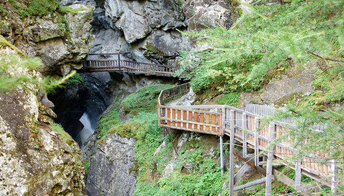
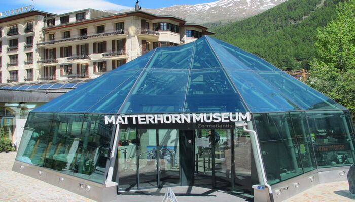

Zermatt is situated at the end of the Matter valley, at one of the most scenic spots in the Swiss Alps. Its population of 5,700 is supplemented by a steady stream of visitors from all over the world. The town is located at a high altitude and offers spectacular views of the Matterhorn and 28 other 4,000 metre peaks surrounding the mountain village. Zermatt is the ideal place: a car free village in a perfect landscape with old churches, the best shops, hotels, restaurants and chalets.
HISTORY
Until the mid-19th century, it was predominantly an agricultural community. The town was “discovered” mid-century by British mountaineers, most notably Edward Whymper, whose conquest of the Matterhorn made the village famous. The first triumphant ascent of the Matterhorn in 1865 was followed by a rush on the mountains surrounding the village. Praborno or Prato Borno are the older names of Zermatt; they appear in the ancient maps as early as the thirteenth century.
The name of Zermatt, derives from the alpine meadows, or Matten (in German), in the valley. The name appeared first as Zur Matte “in the meadow” and became later Zermatt. The reason of this change from Praborno to Zermatt is attributed to the gradual replacement of the Romance-speaking people by German-speaking colonizers.
Zermatt and the Matterhorn form a unique pair in the world. The arrival of the railway to the town in the middle of the 19th century, the opening of the Gornergrat rack railway, which goes up to 3,089 metre and the inauguration of the first ski lifts in the middle of the 20th century facilitated the arrival of mountaineers, skiers and tourists to Zermatt. As the years went by, Zermatt expanded its skiing area, reaching the Theodul glacier, the Plateau Rosa and the summit of the Matterhorn glacier paradise, where the cable car, the ski lift and the highest ice cave in Europe are located. Zermatt is also home to the first underground funicular in Switzerland, the Sunnegga Espress, currently one of the fastest and most modern in the world. It was in Sunnegga that Zermatt's first ski lift was inaugurated during the 1940s.
In 2015, Zermatt celebrates the 150th anniversary of the first ascent of the Matterhorn.
Zermatt Village
Most of the buildings are in the traditional style, in wood covered with resin and with roofs of laminated rock. In summer the balconies are full of colorful flowers and in winter they are covered with snow.
The main street is full of shops. There are bars, restaurants and night-spots to suit every taste and pocket. There are no tour buses. The train stops here. All journeys on from here are on foot or ski, due to is car-free. Only electric cars are allowed to circulate to avoid pollution.
Walking through the cobbled paths of town, between the ancient sunburnt barns and chalets, you catch your first glimpse of the Matterhorn.
The Matterhorn
The town of Zermatt is beautiful. But the true protagonist is the Matterhorn, which appears behind the little houses of the town of Zermatt. With its 4,478 meters high and its pyramid shape, it is one of the most photographed mountains in the world. It can be seen from many points in the town.
The Matterhorn has two distinct summits, situated at either end of a 100-metre-long (330 ft) exposed rocky crest which forms the Italian/Swiss border. The Matterhorn has a pyramidal shape with four faces nearly facing the four compass points.
An essential stop in Zermatt to take the typical picture with the Matterhorn in the background.
Gornergrat
The Gornergrat is a viewpoint of Switzerland in the mountains. From there you can see up to 29 peaks over 4,000 metres, including the Matterhorn and Monte Rosa, the highest in Switzerland.
In addition to the viewpoint, there is the Kulmhotel Gornergrat (the highest three-star hotel in Europe) with privileged views. Its facilities include a restaurant, a self-service restaurant, an astronomical observatory and several shops.
There are also several paths in the area to enjoy nature by hiking.
open-air cog railway brings passengers direct from Zermatt station (1,620 m) to the summit of the Gornergrat (3.089 m), 365 days a year. The ride takes 33 minutes
Gorner gorge
The Gorner Gorge (Gornerschlucht) is located a 20-minute walk from the southern edge of the village of Zermatt. and is easily accessible. Access for tourists was created back in 1886 and 1887. The rock, is about 220 million years old.
This gorge was formed due to the ancient action of the Gornera waters and is characterized by its strange shapes and the spectacular waterfalls. A properly secured path will lead you along the ravine through galleries and walkways.
Zermatlantis Matterhorn Museum
It's the only one in the world dedicated to a single mountain. The museum building simulates the shape of the Matterhorn with glass. Inside, the social and cultural evolution of the entire area surrounding the mountain is explained. It also discusses how mountain sports have advanced and the improvements in equipment since the golden age of mountaineering in the 19th century.
The museum is organized like a traditional Alpine village, with galleries contained in 14 authentic buildings that were dismantled and rebuilt in this underground space.
The museum's most precious object is a piece of rope from the first ascent of the Matterhorn in 1865.
Zermatt in pictures


RESTAURANTS
According to Tripadvisor, there are 176 restaurants in Zermatt. They are either located in the mountains or in the city.
In the restaurants you can find a wide variety of dishes, from traditional Swiss dishes to Asian and Peruvian cuisines.
Among the most renowned are: the Chez Vrony in the Alps and the Stübli in the city, specifically in the Walliserhof Hotel.
Chez Vrony
Chez Vrony is one of the few restaurants that still uses its own organic products, made from animals nourished solely on Alpine grass. Also have a trout farm. Located in Findeln, one hour uphill from Zermatt.
The culinary menu compound for Typical dishes from Valais and its mountain cuisine is complemented by fine wines (Heida wine, for example).
Among the dishes offered by this restaurant are: For the starter, a table with beef jerky, homemade sausage and Valais cheese. Among the main dishes on offer are Alpine Rösti (combining bacon, Alpine cheese, potato, ham and fried egg) or Alpine Goat's Cheese Ravioli (with butter, thyme and caramelised pear). Additionally they offer a wide variety of desserts.
Stübli
It is located in the heart of Zermatt. It is the ideal place to capture the atmosphere of the famous Alpine city.
It has a traditional decoration based on wood, where the typical dishes of the Valais are the star. The establishment stands out for its delicious fondues (bread in a ceramic fondue pot filled with melted cheese), Raclette (it's melted cheese, but this time served with gschwellti (jacket potatoes), gherkins, onions, and pickled fruit) or its excellent local sausages. A traditional dessert is the Apricot sorbet.
TRAVEL ITINERARY
Day 0: Take a flight from Jose Maria Córdova airport in Rionegro with a few stopovers to Zurich airport (approximately 14 hours). From Zurich it is possible to arrive in Zermatt after a pleasant three-and-a-half-hour train ride.
Day 1: Assuming we arrive at 7 am, we will stay at the hotel and at 9 am we will leave for our first destination, the Matterhorn, where we will tour its surroundings and take beautiful pictures. Here we will stay until 2 pm approximately. On the way back we will tour the city and additionally go to the Zermatlantis Matterhorn Museum to learn about the history of this fascinating place. In the evening we will go to taste one of the best restaurants in town, the Stübli restaurant, where we will order a delicious fondue, accompanied by a warm wine. Afterwards we will explore the nightlife of Zermatt and visit one of its bars.
Day 2: In the morning we will take the train line from Zermatt station to Gornergrant, a journey that takes approximately 33 minutes. We will take advantage of the trip to enjoy the lovely landscapes up to the top of the mountain in the western part of the Alps. When we arrive at the place, we will take more pictures from this viewpoint and we will hike in the area to enjoy nature and try to photograph the autochthonous animal of this country (wild mouflon). In this place we will be until 12 m approximately. On our way back to the city we will take the opportunity to have lunch in another typical restaurant of the city and then we will make a tour through the streets of the village to know a little more about the culture. And in the afternoon, we will take advantage of the après-ski scene of the village, where we will enjoy the beautiful ski slopes.
Day 3:We will leave the hotel in the morning to tour the Gorner gorge. For this, we will walk for about 20 min from the village of Zermatt to the place. The walk on this trail takes about 2 hours. At the end we will return to the hotel to rest and then we will take the train back to Zurich and then the flight to Medellin, Colombia.